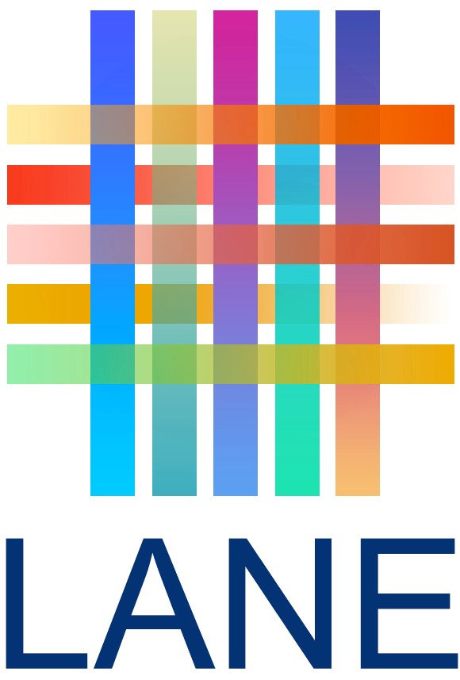

About
Welcome to LACLI, an international collaboration to create a repository of free online resources for Latin American, Caribbean, Latinx, and Iberian studies! LACLI is an essential tool to find websites that provide access to a great variety of resources such as audiovisual materials, books, data, ephemera, government documents, oral histories, periodicals, reference works, visual materials, web archives and more!
LACLI is managed by the Latin America Northeast Libraries Network (LANE), a network of library professionals representing academic and research libraries mainly in the Northeastern United States. LANE is a regional affinity group with ties to the Seminar on the Acquisition of Latin American Library Materials (SALALM).
History
LACLI was established during the COVID-19 pandemic lockdown to provide emergency support for online teaching, learning, and research. We aim to facilitate the discoverability and visibility of free online resources that cover the history, social sciences, natural sciences, and humanities. It serves as a useful tool for students, teaching faculty, librarians, and digital scholars of Latin American, Caribbean, Latinx, and Iberian studies.
International Dimension
LACLI is an international collaborative effort aimed at sharing digital resource collections on Latin American, Caribbean, Latinx, and Iberian research across borders. In October 2020, La Biblioteca Daniel Cosío Villegas at El Colegio de México became a collaborating institution, and in April 2022, the Centro de Pesquisa e Documentação de História Contemporânea do Brasil (CPDOC) at Fundação Getulio Vargas joined the initiative. Their contributions have expanded LACLI's multilingual access capabilities in English, Spanish, and Portuguese.
Acknowledgements & Recognitions
We extend our gratitude to Judith Alspach and James Simon from the Center for Research Libraries (CRL) for sharing the data that helped start this project and Orchid Mazurkiewicz for authorizing us to adapt the Hispanic American Periodicals Index (HAPI) subjects list.
In 2022, LANE, La Biblioteca Daniel Cosío Villegas de El Colegio de México, and the Fundação Getulio Vargas Centro de Pesquisa e Documentação de História Contemporânea do Brasil (CPDOC) were recognized with the Seminar on the Acquisition of Latin American Library Materials (SALALM) Award for Institutional Collaborative Initiatives for their work to expand multilingual access to LACLI resources by adding metadata in English, Spanish, and Portuguese.
How You Can Use Our Data
LACLI is licensed under under a Creative Commons Attribution-NonCommercial-ShareAlike 4.0 International License. LACLI emerged from an identified need for a place to share and reuse data to create tailored research support content (e.g. subject guides, pedagogical guides).
View our Open Data Sheet to start building your own projects.
Developed by
Executive Team
Jesús Alonso-Regalado
Principal Coordinator. LANE member. University at Albany, SUNY
Cate Kellett
Metadata Coordinator. LANE member. Yale Law Library
Eric Silberberg
Web Coordinator. LANE member. Queens College, CUNY
Quality Control & Review Team
Jesús Alonso-Regalado
Quality control coordinator. LANE member. University at Albany, SUNY
Anabel Gutiérrez
LANE member. New York University
Cate Kellett
LANE member. Yale Law Library
Sonia Morcillo
Cambridge University Library
Collaborators
Fernando Acosta-Rodríguez
LANE member. Princeton University
Arón Alvar Sánchez López
El Colegio de México
Julián Alvarez
Princeton University
Gina Andrade
University at Albany, SUNY
Sarah Aponte
LANE member. CUNY Dominican Studies Institute
Tomás Bocanegra Esqueda
El Colegio de México
Renan Marinho de Castro
Fundação Getulio Vargas
Micaela Chávez Villa
El Colegio de México
Paloma Celis Carbajal
LANE member, New York Public Library
Víctor Cid Carmona
El Colegio de México
J. Silvia Cho
The Graduate Center, CUNY
Noa Corcoran-Tadd
Dumbarton Oaks
Jonathan Israel Escobar Farfán
El Colegio de México
Isabel Espinal
LANE member. University of Massachusetts
Galilea Estrella Rosario
University at Albany
Patricia Figueroa
LANE member. Brown University
Melissa Gasparotto
LANE member. University of Pennsylvania
Brie Gettleson
LANE member. University of Pennsylvania
Silvia Eunice Gutiérrez de la Torre
El Colegio de México
Talía Guzmán-González
Former LANE member and Chair
Joe Holub
LANE member. University of Pennsylvania
John Honeycutt
Duke University
Mariana Lopes
Fundação Getulio Vargas
Martha Mantilla
LANE member. University of Pittsburgh
Cailane Melo
Fundação Getulio Vargas
Nicole Mendez
University of Pennsylvania
Sonia Morcillo
LANE member. Cambridge University
Diana Olivares Sánchez
El Colegio de México
José Valentín Ortiz Reyes
El Colegio de México
Ana Beatriz Mariano Pereira
Fundação Getulio Vargas
Ana Ramírez Luhrs
LANE member. Lafayette College
Camelia Romero Millán
El Colegio de México
Nelson Santana
LANE member. Bronx Community College, CUNY
Jennifer Schaefer
University of Connecticut
Lynn Shirey
Former LANE member. Harvard University, Retired
Sócrates Silva
LANE member. Columbia and Cornell University
Ryan Thomas
University at Albany
Miguel Valladares-Llata
LANE member. University of Virginia
Luz Elena Vergara Castro
El Colegio de México